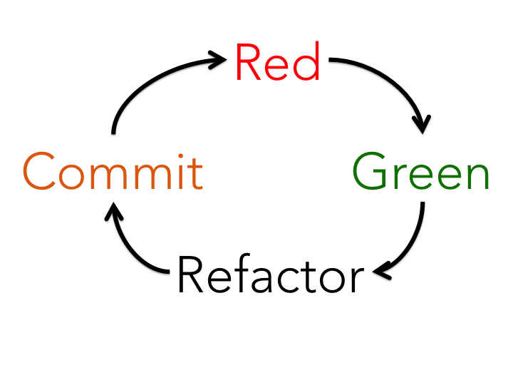

[ 0|Dev ] Spring Boot / Ember / Corber.io / TDD
Intro:
In this write up we will focus on Spring + EmberJS (w/ TDD) while referencing the resources linked below.
Keeping with the 0|Dev theme, we will start without assumptions and walk through getting up and running from a new machine.
:-)
Getting Started
We will be referencing this tutorial:
start.spring.io
Instead of getting started with the mvn command, lets use the spring initializr.
or you can download the zip here: sprimberj-backend.zip
start.spring.io is powered by Spring Initializr and Pivotal Web Services and one easy way to get up and going with your spring boot application.

Editor
With the sprimberj-backend.zip in hand, lets fire up or editor.
IntelliJ IDEA - Ultimate (Free trial)
- IntelliJ -> Right Click "sprimberj-backend.zip" -> Reveal in Finder
- Unzip (Double Click)
- sprimberj-backend/pom.xml -> + Add as Maven Project
Adding dependencies
The Spring Initializr got us pretty far but there are a couple of dependencies we can add to make our testing easier.
Add the following dependencies to your pom.xml:
<dependencies>
<dependency>
<groupId>org.springframework.boot</groupId>
<artifactId>spring-boot-starter-hateoas</artifactId>
</dependency>
<dependency>
<groupId>org.springframework.boot</groupId>
<artifactId>spring-boot-starter-test</artifactId>
<scope>test</scope>
</dependency>
+ <dependency>
+ <groupId>org.springframework.boot</groupId>
+ <artifactId>spring-boot-starter-actuator</artifactId>
+ </dependency>
+ <dependency>
+ <groupId>org.springframework.boot</groupId>
+ <artifactId>spring-boot-starter-test</artifactId>
+ <scope>test</scope>
+ </dependency>
+ <dependency>
+ <groupId>com.jayway.restassured</groupId>
+ <artifactId>rest-assured</artifactId>
+ <version>2.8.0</version>
+ <scope>test</scope>
+ </dependency>
</dependencies>
Test
Most know testing is good but few start with tests and follow TDD. For me, clear test and commits not only help keep sanity, it improves efficiency, quality and value of your projects.

Red - Lets start with a failing test.
Add the following to: SprimberjBackendApplicationTests.java
package com.joshuamccall.StartApplication;
import org.junit.Test;
import org.junit.runner.RunWith;
import org.springframework.boot.test.context.SpringBootTest;
import org.springframework.test.context.junit4.SpringRunner;
import static com.jayway.restassured.RestAssured.get;
import static org.hamcrest.CoreMatchers.equalTo;
@RunWith(SpringRunner.class)
@SpringBootTest
public class SprimberjBackendApplicationTests {
@Test
public void home() {
get("/").then().assertThat().body(equalTo(""));
}
}
To run the test, we will need the dev server running:
- right click (SprimberjBackendApplication.java) -> Run
With the dev server running:
- right click (SprimberjBackendApplicationTests.java) -> Run
We should see the following:
Response body doesn't match expectation.
Expected: ""
Actual: {"statusCode":404,"error":"Not Found","message":"Not Found"}
Green - Lets make it pass!
- Right click (sprimberj-backend/src/main/java/com/joshuamccall/StartApplication/)
- New -> package -> controllers
- Right click controllers package -> New -> Java Class -> HomeController
Add the following to (HomeController.java)
package com.joshuamccall.StartApplication.controllers;
import org.springframework.web.bind.annotation.RequestMapping;
import org.springframework.web.bind.annotation.RestController;
@RestController
public class HomeController {
@RequestMapping("/")
public String HomeController() {
return "";
}
}
With the dev sever running lets run our test again.
Now we should see:
"1 test passed"!!!
If you open a browser to http://localhost:8080/ you will see a blank white page (and not an error)!!!
Red - Green - Recap
At this point, we have bootstrapped our app with Spring Boot and test drove our first route. It doesn't look like much but now we can continue with TDD!
Red - customers (1, 2 and 3)
We have already bootstrapped the app, gotten the dev server running and our first test passing, so as we follow the tutorial we can start with Customer.java.
But before we do, lets get a failing test.
Add the following to your test file.
@Test
public void customers() {
get("/customers/1").then().assertThat().body(equalTo("{\"id\":1,\"fullName\":\"Edsger Dijkstra\",\"phone\":\"11-111-111\"}"));
get("/customers/2").then().assertThat().body(equalTo("{\"id\":2,\"fullName\":\"Ada Lovelace\",\"phone\":\"22-222-222\"}"));
get("/customers/3").then().assertThat().body(equalTo("{\"id\":3,\"fullName\":\"Alan Turing\",\"phone\":\"33-333-333\"}"));
}
Now, as we make our bean, controller and store we are working towards making our test pass. Usually we will unit test these individual pieces but for now we can follow the guide.
Instead of running the curl command lets restart the dev server and run our test.
Ember
If you are following the tutorial with Intellij, checkout:
Cors
Running ember serve without Spring Zuul:
open -a Google\ Chrome --args --disable-web-security --user-data-dir
Corber.io
The tutorial walks you through proxying Spring Boot and Ember together but what if we want to deploy them seperately? In this section we will walk through turning your Ember app into a mobile app with Corber.io.
See corber.io
Ember new
- ember new sprimberj-frontend
- npm i -g corber
- corber init
Update config/environment.js with the following:
rootURL: '',
locationType: 'hash',
- corber platform add android
- corber build --platform=android
- Intellij -> Tools -> Android -> SDK Manager
- Intellij -> Tools -> Android -> AVD Manager -> Actions -> Start
CLI
see: https://developer.android.com/studio/run/emulator-commandline.html
~/Library/Android/sdk/tools/bin/avdmanager list avd ~/Library/Android/sdk/tools/emulator -avd Pixel_XL_API_26_2View on Emulator
- npm install cordova -g
- corber proxy run android --emulator